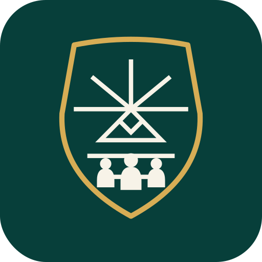

Conducteurs
Faire connaître les conducteurs et leurs véhicules.
Bientôt
VILLAGE CONNECT TOGODanyi Todomé DaravéAccueilVoyager plus simplement sur les routes du Togo et d’Afrique de l’Ouest.
Faire connaître les conducteurs et leurs véhicules.
BientôtTrouver un trajet pour soi ou pour sa famille.
BientôtOrganiser les déplacements entre villes et villages.
BientôtCet espace présente le projet. Les services seront ouverts progressivement.